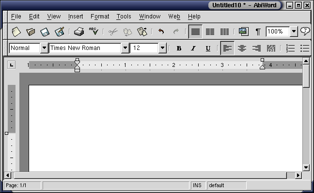
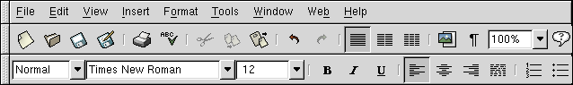
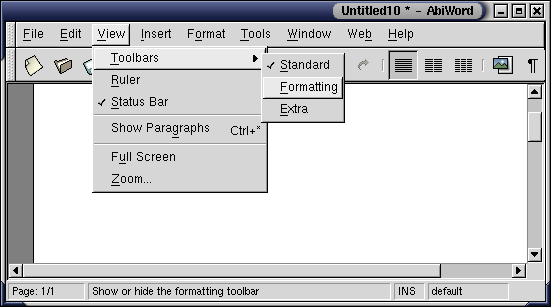
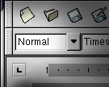
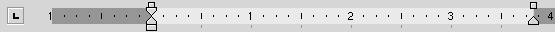

The AbiWord Workspace
AbiWord looks quite similar to other word processors, hopefully making anyone new to the software quite at home.

The familiar interface should allow most people to start working immediately. However, there are some pieces that may be new.
Title Window
The title window itself is like any other application's window, with one difference. Note the * near "Untitled10". The star means that "Untitled10" has been modified. This provides an easy way to tell if the document needs to be saved.
The Function Bars

These are the three major function bars. The first, known as the Menu Bar, is the best place to start getting familiar with AbiWord. It's best to start browsing the menus to get a sense of all that AbiWord can do with documents.
The second is the "Standard Bar", and the third (at the bottom) is the Formatting Bar. A detailed overview of their functions is in the help section "Function Menus".
Working the Bars
AbiWord allows for hiding toolbars. If some are missing or are simply not needed, check under View > Toolbars.

The Grab Bar

For those running AbiWord on GNOME computers, the grab bar located to the far left of each toolbar presents an easy way for anybody to modify the interface to their liking. Click on the grab bar and drag. The toolbar will follow the mouse, even allowing for the toolbar to hover over any part of the screen.
Status Bar
The Status Bar allows for a quick over view of the document's status. On the left, AbiWord notes the current page. The middle box, which is usually empty, displays a quick help message describing the current menu option.
The Rulers

By using the rulers it becomes easy to set page margins and tabstops. For more information on how to effectively use the ruler, please see the tutorial "Margins, Tabstops and Indents, oh my!".